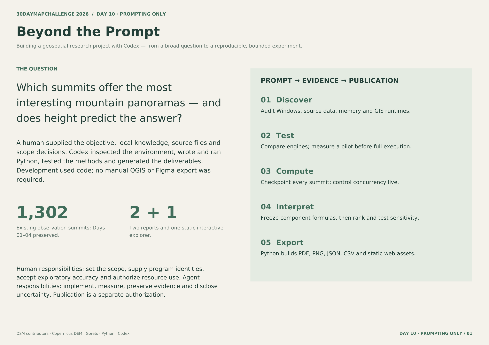
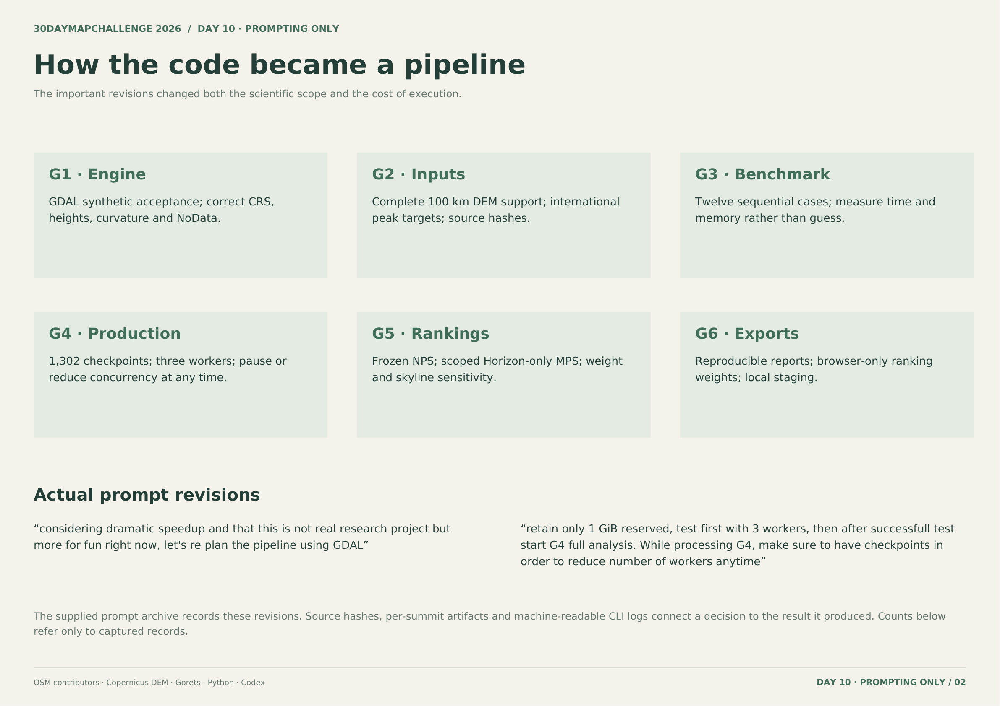
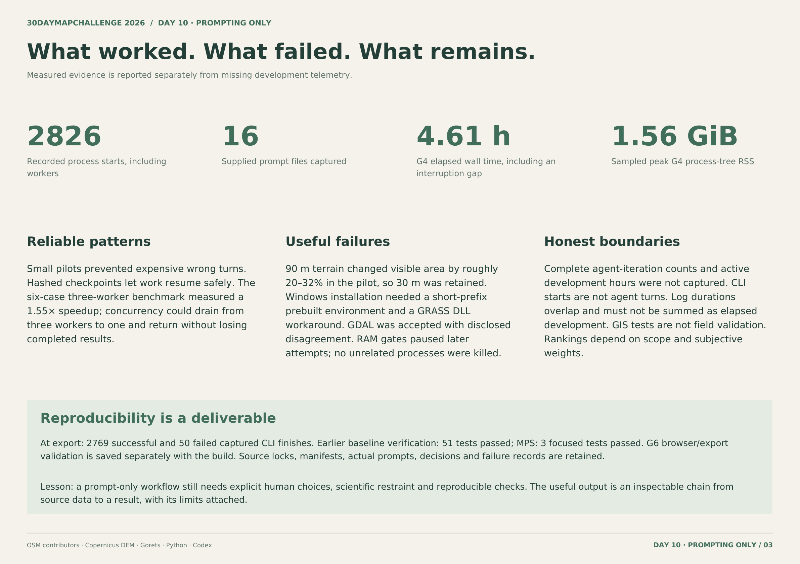

DAY 10 / PROMPTING ONLY · 30DAYMAPCHALLENGE 2026
За пределами промпта
Как создавался геопространственный проект с Codex
G1–G6контрольные этапы
03страницы о процессе
Pythonобработка и публикация
ДАННЫЕ И ПОДХОД
Как устроена работа
От первого запроса до проверяемого результата: среда Windows, пилоты, ошибки, решения и воспроизводимый конвейер.
- Человек задавал исследовательский вопрос, уточнял объекты и масштаб анализа, разрешал вычисления и публикацию. Codex писал и запускал код, проверял данные и готовил материалы.
- Перед массовым запуском проведены небольшие пилоты. Сохранены контрольные точки по вершинам, хеши входов и выходов, реальные запросы пользователя и журналы запусков.
- Отчёт описывает смену GRASS на GDAL, отказ от грубого DEM, управление памятью и влияние решений на результат. Статистика запусков не выдаётся за число диалогов с агентом или активное время разработки.
Оригинальный отчёт
3 стр.

